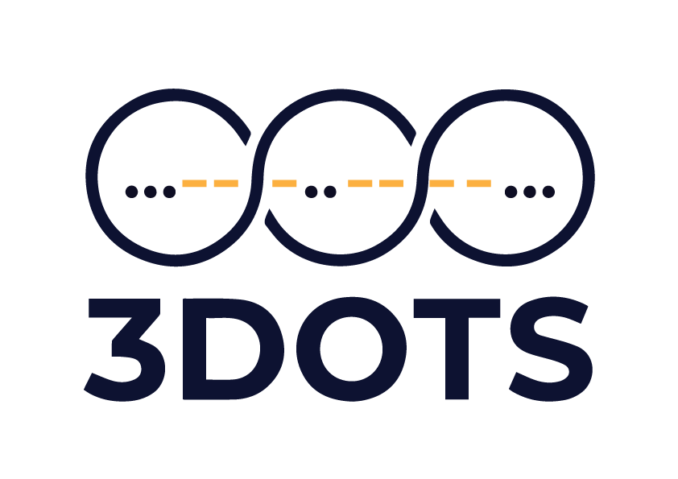

IT & Product Consulting
We help you choose the right tech stack, architecture, and product approach so your MVP doesn't become technical debt.

AI-enabled product development partner
3Dots is a development partner for founders. We help you turn ideas into working MVPs in just 15 days, after design approval.
Core capabilities
We help you choose the right tech stack, architecture, and product approach so your MVP doesn't become technical debt.
Clear UX flows and focused UI design that translate your idea into a usable, testable product—before development begins.
Fast, reliable web and mobile development focused on MVPs, performance, and scalability for your product.
Structured functional and usability testing to ensure your MVP is stable, reliable, and ready for real users.
Secure hosting, environment configuration, and launch-ready deployment so your MVP goes live smoothly and scales when needed.
We apply AI where it creates real value—automation, intelligence, and efficiency, not buzzwords.
The 15-DAYS FRAMEWORK
A structured, design-led approach that takes your idea from concept to a working MVP in just 15 days. Once the design is finalized and approved, we move into a structured, fast-paced build process designed to deliver a reliable, launch-ready MVP without chaos.
We start by setting the groundwork for clean, scalable development.
Outcome: A solid technical base ready for feature development.
This is where your MVP starts taking shape.
Outcome: A functional MVP with all critical features in place.
We polish, test, and prepare your MVP for real-world use.
Outcome: A stable, working MVP ready for launch or user testing.
Why we make MVP launches happen in 15 days?
The goal is to help founders validate their ideas before time, money, resources, and energy are lost. A MVP is not your final product. It is the fastest way to learn whether your idea works.
Great ideas don't fail because they are weak. They fail because execution is slow.
FREQUENTLY ASKED QUESTIONS
Common questions about our 15-day MVP process, pricing, and how we work with founders.
Yes, when the scope is clear. The 15 days refer strictly to the development phase after design approval. Once the scope and UI/UX are finalized, we execute in a focused 15-day sprint to deliver a working MVP. Clarity creates speed.
Because speed without clarity creates waste. We complete and approve design first so development becomes execution—not experimentation. That's how we protect your time and budget.
That's normal. Most founders don't need development first, they need clarity first. We help refine your idea, define the right MVP scope, and prioritize only what's necessary for early validation before moving into design and development.
Focused MVPs with clearly defined core features — SaaS tools, web apps, mobile apps, AI-enabled platforms, and internal tools. If the scope is too large, we help break it into smart phases. The goal is not to build everything — it's to build what proves the idea works.
Speed comes from clarity, not shortcuts. We follow a structured development process, clean architecture practices, and internal testing to ensure stability and scalability.
Agencies focus on delivering what is asked. We focus on challenging what should be built. We work like product partners—questioning assumptions, refining scope, and aligning every decision to validation and speed.
Pricing depends on scope and complexity. Since we focus on well-defined MVPs, we provide clear, fixed estimates after understanding your requirements—no vague timelines or hidden extensions.
Yes. While it's built for validation, the architecture is designed to evolve—so you can scale without rebuilding from scratch.
Launch is the beginning, not the end. We support deployment, launch readiness, and can continue as your long-term development partner—helping you iterate based on real user feedback.
Very involved during scope definition and design. Fast execution depends on quick decisions and clear communication. The more aligned we are, the faster we move.
Startups worked with us
Who we like to work with
We work best with founders who:
Let’s build
Whether you’re refining a concept or ready to build, we’re here to help you take the next step.